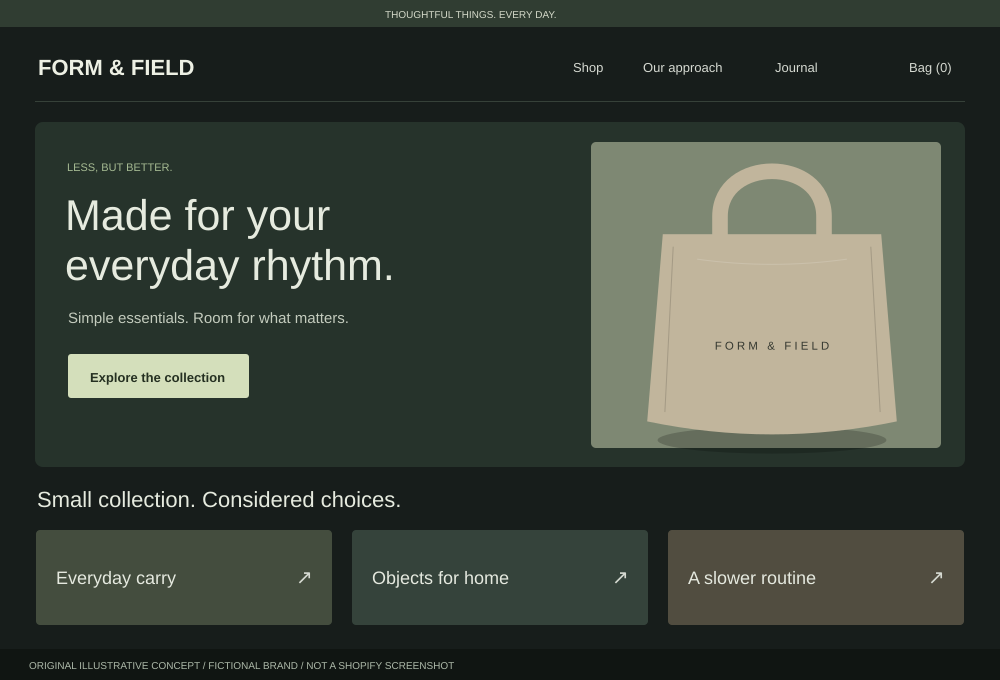

Design concept
Shopify Web Design
Help shoppers find the right collection, compare products and understand the details before they buy. Three connected views for the fictional Form & Field brand.
- Discover
- Compare
- Decide
● ● ●FORM & FIELD / CONCEPT ONLY↗
